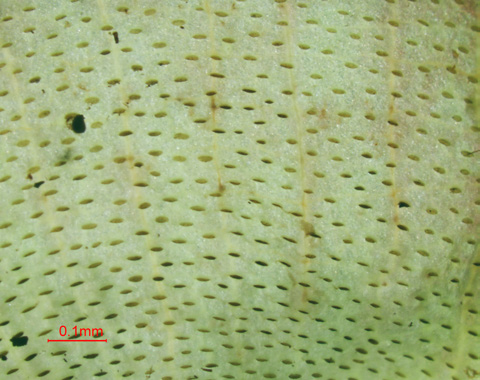
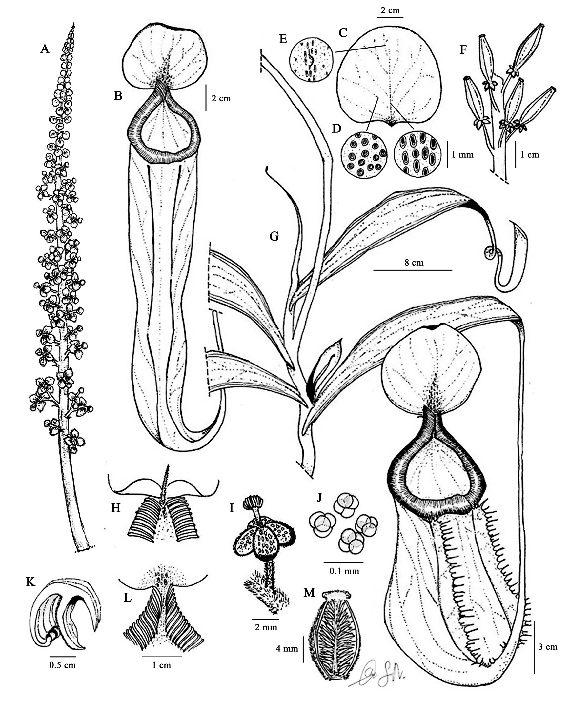
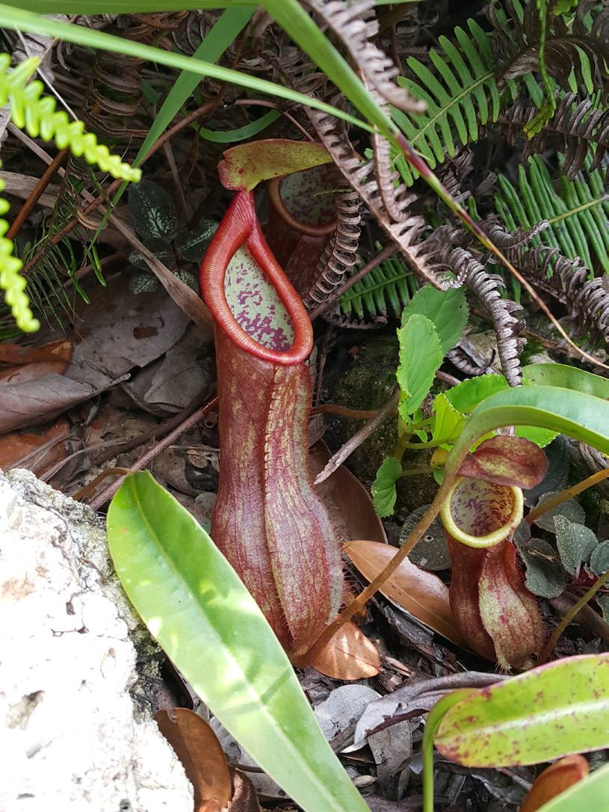
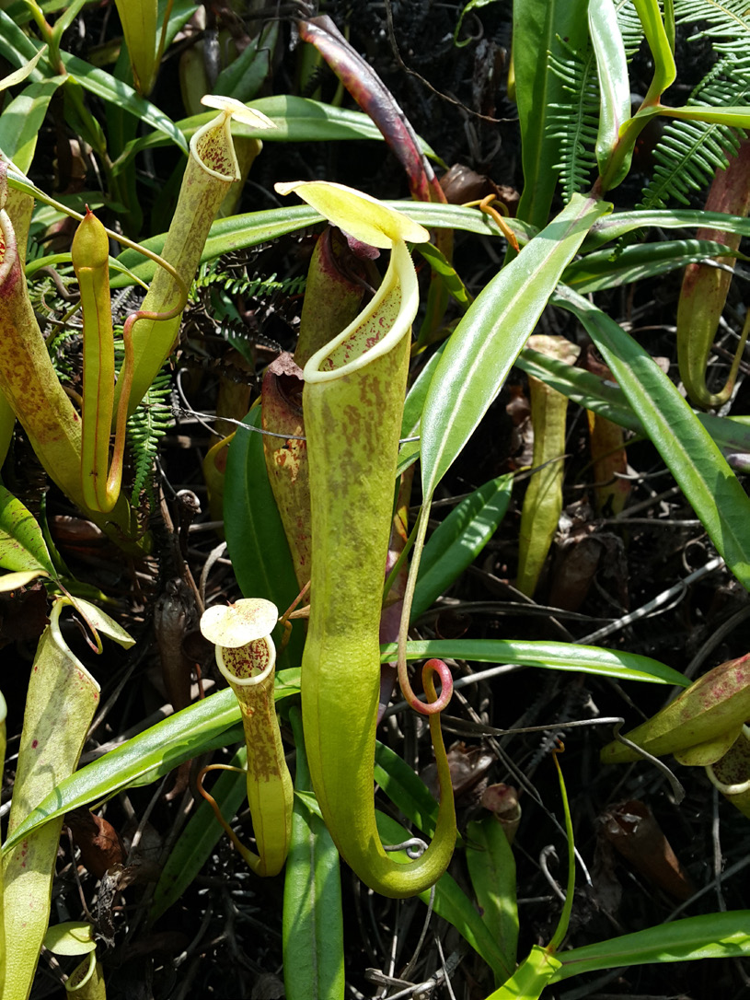

This paper describes and illustrates a new species of Nepenthaceae, Nepenthes krabiensis . The new species is closely related to N. rosea which has been found in the same habitat of the wildlife sanctuary of Krabi Province in Sothern Thailand.
Full text
Full text is available as a scanned copy of the original print version.
Get a printable copy (PDF file) of the
complete article, or click on a page image below to browse page by page.
Links are also available for
Selected References.
Images in this article

Figure1. Morphology of Nepenthes krabiensis under stereo and light microscope. (A–C and E–I; 5x magnification, Bar = 0.1 mm and D; 20x magnification, Bar = 100 µm) A. male flower contained tepal, nectar glands on the tepal surface, androphore and anther, B. anthers, C. longitudinal anther dehiscence, D. tetrad pollen; E. female flower contained tepal, nectar glands on the tepal surface, stigma and ovary, F. superior ovary with four syncarpous carpels, G. nectar gland in lower surface of lid, H. digestive glands in lower pitcher and I. brown hair at the stem.

Figure 2 Nepenthes krabiensis. A. male inflorescence, B. upper pitcher, C. lid of lower pitcher, D. nectar gland, E. appendage of lower surface’s lid, F. infructescence, G. habit, climbing stem with immature upper pitcher, mature lower pitcher and axillary bud, H. spur filiform, I. male flower, J. tetrad pollen, K. peristome of lower pitcher in transverse section, L. peristome-teeth and ridge of lower pitcher, M. ovary with transverse section. Drawn by Sunya Nuanlaong and Chayan Yodthammarat.

Figure 3 Nepenthes krabiensis. A. habitat and habit, B. male inflorescence (left) and female inflorescence (right), C. lower pitcher; D. upper pitcher.

Figure 3 Nepenthes krabiensis. A. habitat and habit, B. male inflorescence (left) and female inflorescence (right), C. lower pitcher; D. upper pitcher.